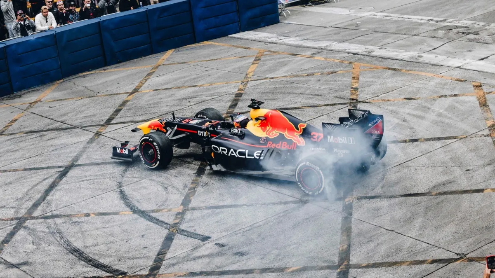

La F1 hizo furor: 80 mil chilenos vibraron con el Red Bull Showrun
El auto del showrun fue conducido por el austriaco Patrick Friesacher, ex piloto de Fórmula 1 y especialista en exhibiciones. ¡Entérate de más aquí!
Furor en el corazón de Las Condes se vivió el domingo, con la locura de la Fórmula 1 tomándose Apoquindo. Más de 80 mil personas se reunieron alrededor de la avenida para presenciar una nueva versión de Red Bull Showrun, evento gratuito y abierto al público que no se celebraba en Chile desde 2012.
El RB7, histórico monoplaza de Oracle Red Bull Racing con el que Sebastian Vettel campeonó en 2011, recorrió a máxima velocidad la recta de Las Condes, en una espectacular jornada cargada de emoción, donde los fanáticos de la F1 pudieron presenciar en primera persona cómo suena un auto de la escudería campeona del mundo por tercer año consecutivo.
Para esta oportunidad, el auto del showrun fue conducido por el austriaco Patrick Friesacher, ex piloto de Fórmula 1 y especialista en exhibiciones, quien llegó a Chile tras pasar por diferentes ciudades como Dublín, Madrid, Chicago o Mumbai.
En la animación, los encargados de darle vida y emocionar a los más de 80 mil personas que llegaron hasta Apoquindo fue la icónica dupla argentina de periodistas deportivos, Fernando Tornello y Juan Fossaroli, quienes animaron a todo el público presente, que desde tempranas horas de la mañana se congregó para escuchar en vivo y en directo el sonido de un F1 y presenciar las increíbles velocidades que puede alcanzar.

Antes del recorrido del monoplaza, una serie de actividades mantuvieron prendida la fiesta para el público, entre las que destacaron una carrera de karting con creadores de contenido y atletas como “Pollo” Castillo, Ignacio Casale, Soy Cabezón, y Ropero Paula, entre otros. En la previa también llegaron exponentes del Freestyle para realizar una exhibición de Red Bull Batalla, de la mano de los MCs Rodamiento y Racso, con Cayu como host.
Posterior a eso, la agenda no se detuvo y diferentes atletas del mundo motor como Tomás De Gavardo, Nicolás Pino, Hans Probst, Alberto Heller, Gerardo Rosselot, Ignacio Casale y Francisco “Chaleco” López realizaron una demostración sobre motocicletas y autos de Rally, para luego dar el paso a un desfile de autos históricos, a cargo de “Cars and Coffee”, “Burnouts Creadores de Nubes” y “Super Cars”, marcando una tremenda jornada y un completo espectáculo para los seguidores y amantes del mundo motor.
Impactante fue además el vuelo del atleta de parapente acrobático Victor “Bicho” Carrera, quien sorprendió a todos al realizar acrobacias aéreas entremedio de los edificios de la zona antes de aterrizar en plena pista.